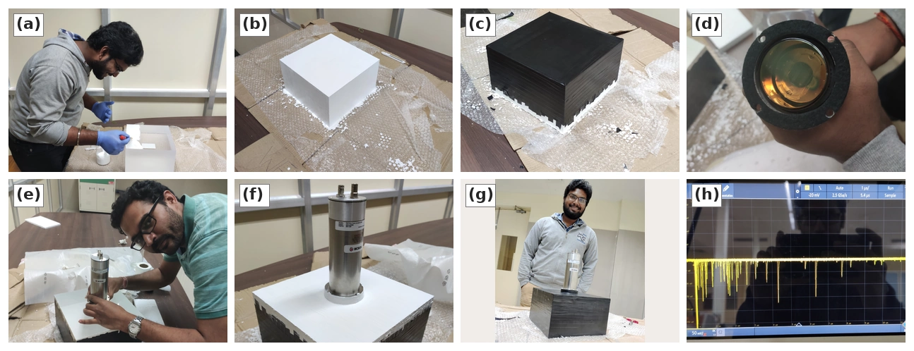
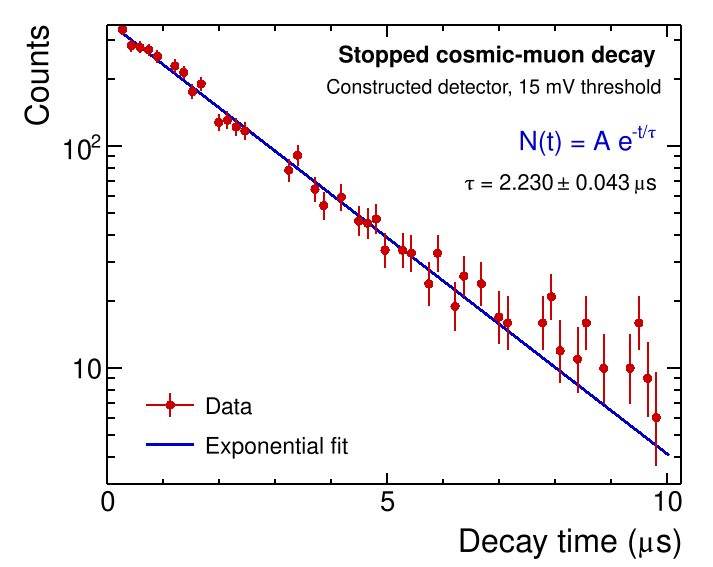
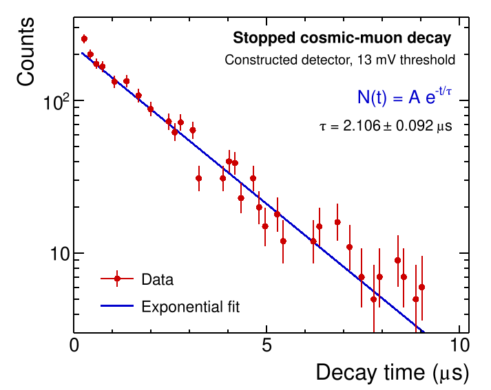

Building and Testing a Plastic Scintillation Detector
Detector construction, experimental validation, and measurement of the cosmic-muon lifetime
Overview
A particle detector begins with a physical interaction, but the information we measure is usually an electrical signal. In this project, I worked with my lab partner to build a plastic scintillation detector and use it to measure the mean lifetime of stopped cosmic muons. The aim was to follow the full experimental process: assembling the detector, establishing that it produced usable signals, and testing its performance through a quantitative physics measurement.
We constructed a detector based on an EJ-200 plastic scintillator coupled to a photomultiplier tube (PMT). After verifying its response with an oscilloscope, we connected it to timing and acquisition electronics, recorded candidate stopped-muon decay events, and extracted decay lifetimes from exponential fits using ROOT. We also collected data with an existing laboratory detector for comparison.
This was a collaborative fourth-year Integrated Master’s laboratory project at NISER, carried out with Divyanshu Gupta. The work combined detector assembly, optical coupling, electronic signal processing, calibration, and data analysis.
Experimental Setup
Turning particle interactions into signals
When an ionizing particle deposits energy in the plastic scintillator, the material emits a short flash of visible light. The EJ-200 scintillator used in our detector emits primarily in the blue region, with a reported emission peak near 425 nm. Photons reaching the PMT release photoelectrons at its photocathode. A dynode chain amplifies the resulting signal into a voltage pulse that can be recorded by electronic instruments.
Efficient light collection depends on the construction of the detector as much as on the choice of scintillating material. Our assembly used several components with distinct roles:
- EJ-200 plastic scintillator: Produced the light signals when particles deposited energy in the detector.
- EJ-510 reflective coating: Helped redirect scintillation light within the scintillator toward the photosensor.
- Black vinyl wrapping: Reduced the entry of ambient light into the assembly.
- EJ-560 silicone optical interface: Coupled the scintillator optically to the PMT.
- ET-9266B photomultiplier tube: Converted the collected light into measurable electrical pulses.
Building the detector
We cleaned and prepared the scintillator, applied successive reflective coatings, and wrapped the coated surfaces to make the assembly light-tight. We then prepared an acrylic mounting support, coupled the PMT to the scintillator through the optical interface, and secured the completed assembly. Finally, we checked the detector output on an oscilloscope before proceeding to the lifetime measurement.

Methods
Initial detector tests
To verify that the completed detector responded to particle interactions, we connected the PMT output to a digital oscilloscope and inspected the resulting voltage pulses. The recorded signals established that the assembled scintillator and PMT were functioning together and motivated the next step: measuring a physical quantity using the new detector.
Measuring the lifetime of stopped cosmic muons
A cosmic-ray muon that stops in the scintillator can produce an initial, or prompt, pulse as it loses energy. Its subsequent decay produces a charged particle that can generate a second, delayed, pulse. The interval between these signals provides an estimate of the muon’s decay time. Collecting many such intervals yields a decay-time distribution.
The timing system used a leading-edge discriminator, a time-to-amplitude converter (TAC), and a multichannel analyzer (MCA). The discriminator selected pulses above a chosen threshold. The TAC converted the time interval between selected signals into a pulse amplitude, and the MCA accumulated the corresponding distribution. A pulse generator was used for the time calibration of the MCA.
The discriminator threshold required particular attention. The previously available detector and our newly built detector showed different noise responses at the same threshold. We adjusted the settings and light shielding before collecting the lifetime data. We analyzed the resulting distributions in ROOT using an exponential decay model,
\[ N(\Delta t) = A e^{-\Delta t/\tau_\mu}, \]
where \(\Delta t\) is the recorded time interval and \(\tau_\mu\) is the fitted mean muon lifetime. This is the signal model used for the fits in the report; background contributions were considered during setup and threshold selection.
Results and Interpretation
The constructed detector produced decay-time distributions consistent with the expected exponential behavior. Two data sets were collected with the new detector, giving the following fitted lifetimes:
| Discriminator threshold | Fitted muon lifetime |
|---|---|
| 13 mV | \(2.106 \pm 0.092\ \mu\mathrm{s}\) |
| 15 mV | \(2.230 \pm 0.043\ \mu\mathrm{s}\) |
These uncertainties are the fit uncertainties quoted in the laboratory report. Both results are consistent, within their stated uncertainties, with the reference muon lifetime of approximately \(2.197\ \mu\mathrm{s}\). Measurements with the existing laboratory detector also gave compatible lifetimes, providing a useful comparison for the new assembly.
An important practical result was that the optimal discriminator threshold differed between detectors. The report identifies approximately 10 mV for the original laboratory setup and 15 mV for our constructed detector. Lower thresholds admitted additional noise or background counts, which complicated the observed decay distribution. This showed why reliable measurements require not only a working detector but also careful electronic configuration and calibration.
The reconstructed decay-time spectra below summarize the two threshold settings used for the detector that we built. The 15 mV setting gave the more precise result and was identified in the report as the preferred operating point for our assembled detector, while the 13 mV setting provides a useful comparison.


These figures reconstruct the laboratory report’s rebinned spectra. Error bars illustrate Poisson counting uncertainties inferred from the reconstructed heights, while the curves and lifetime values reproduce the report’s exponential fits. The original MCA count files and the complete calibration record were unavailable, so these plots should be read as faithful reconstructions of the report figures rather than a new raw-data analysis.
Conclusions
This project demonstrated the complete path from detector construction to a physics measurement. We assembled a plastic scintillator-PMT detector, verified its response, configured the acquisition electronics, and used its signals to measure the lifetime of stopped cosmic muons. The measured lifetimes were consistent with the expected value and with results from the existing laboratory setup.
For me, the most valuable part of the experience was connecting the physical design of a detector to the quality of its measurements. Optical coupling, light shielding, electronic thresholds, calibration, and statistical fitting all influenced the final result.